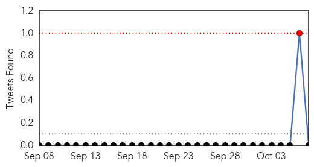

30 Day Trends
Web: 0 alerts, 0 warnings
Twitter: 1 alerts, 0 warnings
Top Articles:
- 0.995
- Coronavirus Scan for Oct 07, 2015
- 0.995
- MERS virus in Slovakia
- 0.975
- Haj pilgrim in Yala 'may have Mers'
- 0.972
- Yala woman tested for MERS after Haj trip, news, Health News, AsiaOne YourHealth
- 0.962
- 3 infected by Saudi who died of MERS in Manila
- 0.917
- Haj pilgrim has suspected MERS symptoms
- 0.902
- Haj pilgrim may have MERS symptoms
- 0.709
- Health Ministry maintains close cooperation with WHO: Al-Obaidi
Top Tweets:
-
No tweets found for Oct 07, 2015
Web/News Articles

Tweets
Article Locations